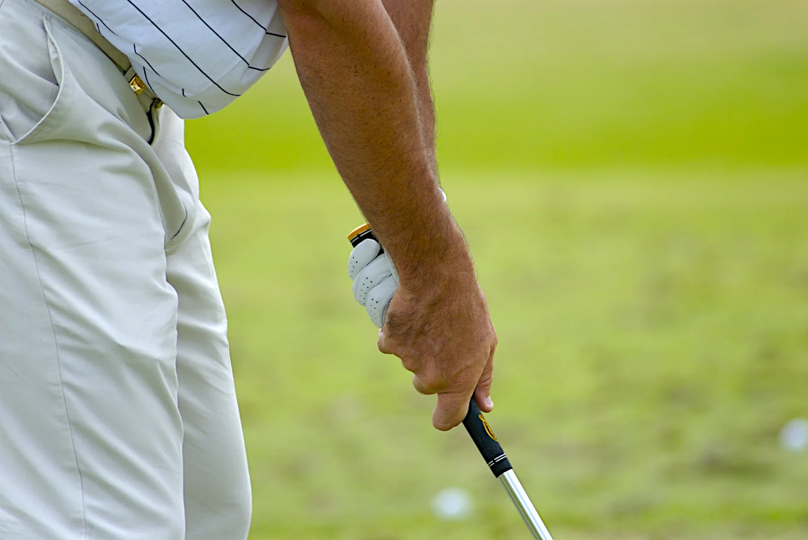
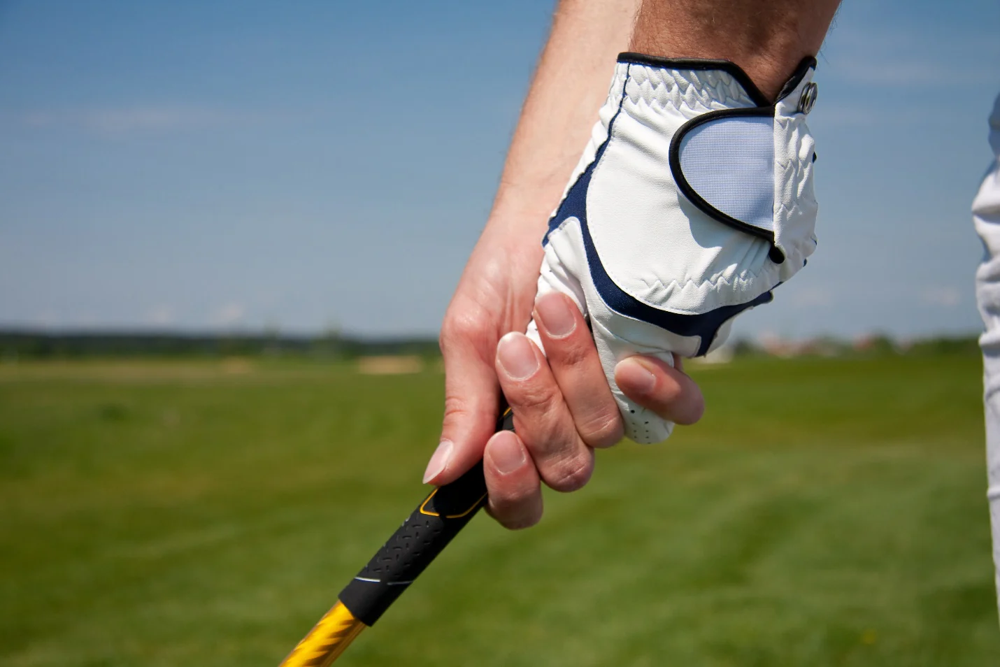
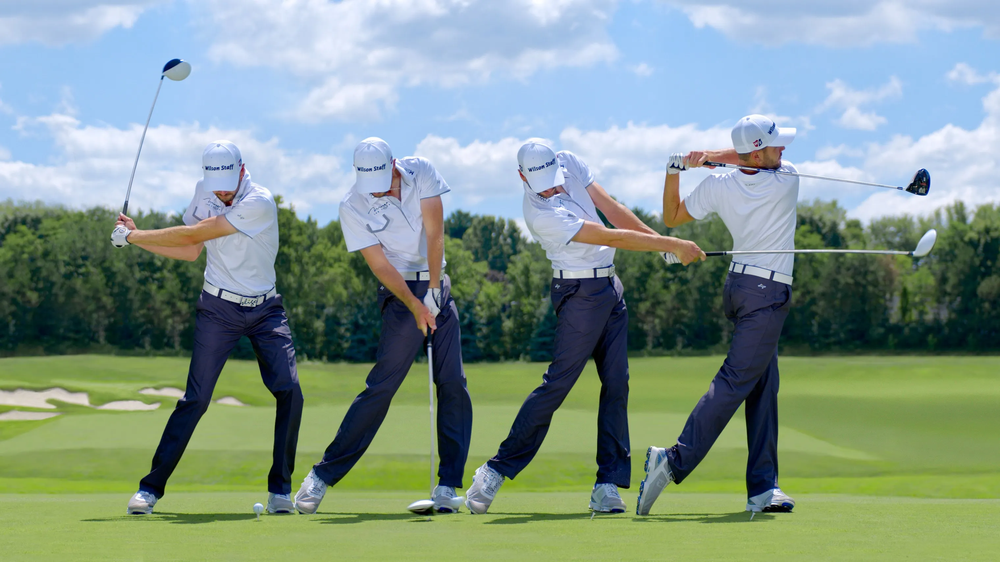

Tehnici și Sfaturi
In jocul de golf, mecanisumul de lovire consta in alegerea unuei crose si lovirea mingii la distanta dorita.
Lovirea mingii de golf, sau “swing”-ul trebuie sa fie o miscare de pendulare pentru ca impactul cu mingea sa fie curata, traiectoria sa fie dreapta iar distanta sa fie in functie de crosa aleasa.
Majoritatea jucatorilor au o rutina care consta in aprecierea distantei, alegerea crosei, o lovitura de proba sau pre-swing si lovirea mingii.
Crosa de golf este tinuta adoptand una dintre cele trei metode traditionale, dovedite ca fiind ideale pentru armonizarea corpului cu crosa aleasa – descrierea de mai jos este pentru dreptaci, stangacii vor inversa mainile:
- Metoda “overlapping” sau Vardon, numita dupa Harry Vardon: degetul mic de la mana dreapta se va agata intre degetul aratator si degetul mijlociu al mainii stangi.

- Metoda “interlocking”: degetul mic al mainii drepte va atinge degetul aratator al mainii stangi.

- Metoda celor “zece degete” sau “baseball grip”: degetul mic al mainii drepte se va pozitiona cat mai aproape de degetul aratator al mainii stangi
